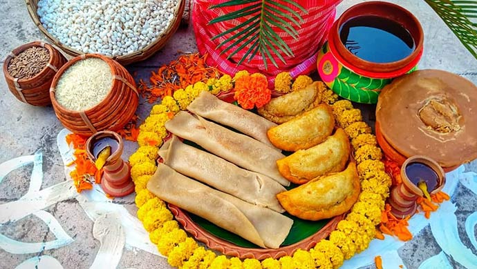
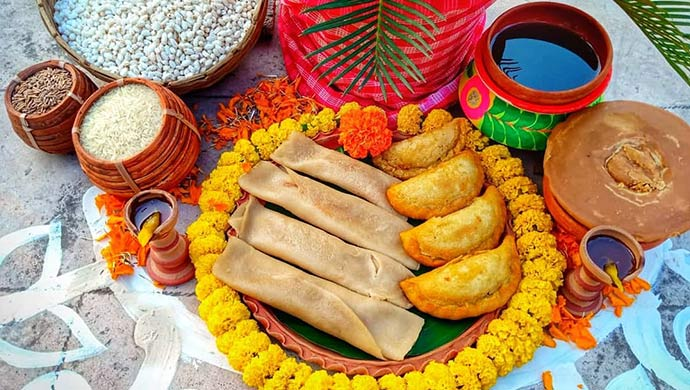

| Home Literature Theatre & Cinema Music & Dance Festivals Cuisine Architecture Handicrafts |


Bengali cuisine is the culinary style of the Bengal region in the eastern part of the Indian subcontinent in Bangladesh and the Indian states of West Bengal, Tripura and Assam's Barak Valley. There is an emphasis on fish, vegetables, and lentils with rice as a staple. Bengali cuisine is known for its varied use of flavours, as well as the spread of its confectioneries and desserts. It has the only traditionally developed multi-course tradition from the cuisine of the Indian subcontinent that is analogous in structure to the modern service à la russe style of French cuisine, with food served in courses rather than all at once.
Rice and fish are traditional favourite foods, leading to a saying in Bengali, "machhe bhate bangali", that translates as "fish and rice make a Bengali".Bengal's vast repertoire of fish-based dishes includes hilsa preparations, a favourite among Bengalis. There are numerous ways of cooking fish depending on its texture, size, fat content and bones. Most of the people also consume eggs, chicken, mutton, and shrimp. Panta bhat (rice soaked overnight in water) with onion and green chili is a traditional dish consumed in rural areas. Common spices found in a Bengali kitchen include cumin, ajmoda (radhuni), bay leaf, mustard, ginger, green chillies and turmeric. Sweets occupy an important place in the diet of Bengalis and at their social ceremonies. Bengalis make distinctive sweetmeats from milk products, including Rôshogolla, Chômchôm, Kalojam and several kinds of sondesh. Pitha, a kind of sweet cake, bread, or dim sum, are specialties of the winter season. Sweets such as narkol-naru, til-naru, moa and payesh are prepared during festivals such as Lakshmi puja. Popular street foods include Aloor Chop, Beguni, Kati roll, biryani, and phuchka.
In Kolkata, many local street vendors own small shops from which they sell their own homemade goods. Items like cheeses (paneer) can be eaten as is, or can be made into sweet sandesh, rosogolla, or chanar payesh. Milk is especially used in Kolkata's various types of payesh, differing in use of different grains and additives like dates, figs, and berries.In addition to European foodstuffs like chocolate, Kolkata takes culinary influence from its Chinese diaspora.Puchka, also known as panipuri, is a common kind of Bengali street food made with a fried dough casing and a potato and chickpea filling, usually found in small stalls alongside bhelpuri, masala chai, ghugni and chaat stalls.
 

Daily meals are usually simple, geared to balance nutrition and makes extensive use of vegetables. The courses progress broadly from lighter to richer and heavier and goes through various tastes and taste cleansers. Rice remains common throughout the meal and is the main constituent of the meal, until the chaţni (chutney) course.


Bengalis eat numerous amounts of fish and typically look for sweetwater and brackish when making meals. They also temper it with phoron.
Then comes the meat course. The divide among the Bengalis of Bangladesh and West Bengal is most evident when it comes to the meat course due to the Hindu principle of ahimsa which prohibits meat consumption. However, Bengali Hindus adore eating meat of goat, chicken, duck and lamb. Most of the hindus refrain from eating beef. Meat, especially beef is readily consumed in Bangladesh and where it is considered the meal's main course. Different beef and mutton as well as chicken are dishes are served in feasts and banquets. Because the consumption of beef is prohibited among Bengali Hindu communities, Khashi mutton is traditionally the meat of choice in West Bengal, but murgi chicken and đim eggs are also commonly consumed.
Next comes the chutney course, which is typically tangy and sweet; the chutney is usually made of am mangoes, tomatoes, anarôsh pineapple, tetul tamarind, pepe papaya, or just a combination of fruits and dry fruits called mixed fruit chutney served in biye badi (wedding ceremony). The chutney is also the move towards the sweeter part of the meal and acts also as a palate cleanser, similar to the practice of serving sorbet in some Western cuisines.
Papoŗ (papadum), a type of wafer, thin and flaky, is often made of đal or potatoes or shagu (sago) and is a usual accompaniment to the chutneys.
The last item before the sweets is doi (yogurt). It is generally of two varieties, either natural flavour and taste or Mishti Doi – sweet yogurt, typically sweetened with charred sugar. This brings about a brown colour and a distinct flavour. Like the fish or sweets mishti doi is typically identified with Bengali cuisine.
weets, or mishti occupy an important place in the diet of Bengalis and at their social ceremonies. It is an ancient custom among both Hindu and Muslim Bengalis to distribute sweets during festivities